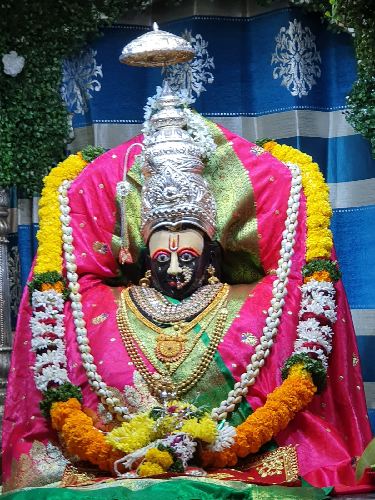
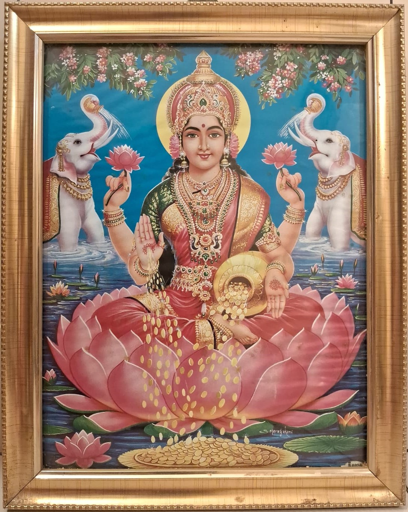

|| नित्य स्तोत्र संग्रह ||
देवी अष्टक

श्रीसूक्त स्तोत्र
श्री ज्ञानेश्वरी पारायण प्रार्थना
श्री मोहिनीराज स्तोत्र

श्रीलक्ष्मी स्तोत्र
श्री महिषासुरमर्दिनि स्तोत्र
श्री अन्नपूर्णास्तोत्रम्
श्री घोरकष्टोद्धरण स्तोत्र
श्री दत्तभावसुधारस स्तोत्र